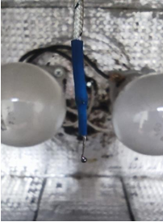

, Malena Navarro1, Edgar Vásquez1, Roberto Cigarruista1, Nacarí Marín2*
, Malena Navarro1, Edgar Vásquez1, Roberto Cigarruista1, Nacarí Marín2*Evaluación del potencial de paneles fabricados a base de paja canalera (Saccharum spontaneum), como material aislante térmico para la mejora de la eficiencia energética de un recinto
Evaluation of the potential of panels made from canal straw (Saccharum spontaneum), as a thermal insulating material to improve the energy efficiency of an enclosure
Kristel Cortez1, Malena Navarro1, Edgar Vásquez1, Roberto Cigarruista1, Nacarí Marín2*
1Universidad Tecnológica de Panamá, Centro Regional de Azuero, Facultad de Ingeniería Eléctrica, Panamá
2Universidad Tecnológica de Panamá, Centro Regional de Azuero, Facultad de Ingeniería Mecánica, Panamá
Fecha de recepción: 8 de noviembre de 2022. Fecha de aceptación: 12 de abril de 2023.
*Autor de correspondencia: nacari.marin@utp.ac.pa
Resumen. Un camino a concretar los ideales de eficiencia energética es el uso de aislamientos térmicos. Cuando se selecciona un aislamiento se deben tomar en cuenta varios factores: la disponibilidad, el costo de aplicación, impacto ambiental y energético. Los aislamientos naturales juegan un papel fundamental en el futuro de las edificaciones sustentables. Cuando se habla de edificaciones sustentables se refiere a construcciones, remodelaciones y reacondicionamiento de los edificios, usando prácticas y materiales que no dañen al medio ambiente, con los cuales se obtengan beneficios como lo son: control de la temperatura, uso de materiales naturales y energía propia. Este proyecto, se realizó con el objetivo de evaluar y analizar el desempeño de la paja canalera (Saccharum spontaneum), mediante el estudio teórico, el diseño y fabricación de placas rígidas que contribuyan al mejoramiento de las condiciones térmicas en los espacios interiores, utilizando un prototipo de caja caliente basada en la norma ASTM C177 y la ley de Fourier de transferencia de calor.
Para los ensayos se fabricó una placa que contenía la mezcla de paja canalera triturada y goma blanca industrial. A fin de determinar la conductividad térmica se procedió a la aplicación de calor de forma constante, para posteriormente determinar el gradiente de temperatura. Los datos obtenidos permitieron conocer de forma relativa la conductividad térmica de la placa confeccionada.
Palabras clave. Calor, conductividad, eficiencia, manufactura, térmico.
Abstract. One way to achieve the ideals of energy efficiency is the use of thermal insulation. When selecting an insulation, several factors must be considered: availability, cost of application, environmental and energy impact. Natural insulation plays a fundamental role in the future of sustainable buildings. When talking about sustainable buildings, it refers to construction, remodeling and reconditioning of buildings, using practices and materials that do not harm the environment, with which benefits are obtained such as: temperature control, use of natural materials and energy own. This project was carried out with the objective of evaluating and analyzing the performance of canal straw (Saccharum spontaneum), through theoretical study, design and manufacture of rigid plates that contribute to the improvement of thermal conditions in interior spaces, using a hot box prototype based on the ASTM C177 standard and Fourier's law of heat transfer.
For the tests, a plate was made containing the mixture of crushed canal straw and industrial white rubber. In order to determine the thermal conductivity, heat was applied constantly, to later determine the temperature gradient. The data obtained allowed to know in a relative way the thermal conductivity of the made plate.
Keywords. Heat, conductivity, efficiency, manufacturing, thermal.
1. Introducción
La eficiencia energética consiste en un conjunto de acciones utilizadas para la reducción o minimización en el uso de energías convencionales con el fin de hacer uso racional de las mismas, logrando un nivel determinado de ahorro energético, calidad de vida y protección del medio ambiente. Lo cual se logra a través de la implementación de hábitos de consumo y un desarrollo sostenible.
Un camino a concretar los ideales de eficiencia energética es el uso de aislamientos térmicos. Los aislamientos naturales juegan un papel fundamental en el futuro de las edificaciones sustentables. Cuando se habla de edificaciones sustentables se refiere a construcciones, remodelaciones y reacondicionamiento de los edificios, usando prácticas y materiales que no dañen al medio ambiente con los cuales se obtengan beneficios como lo son: control de la temperatura, uso de materiales naturales y energía propia [1].
Los materiales herbáceos han sido utilizados desde tiempos de nuestros aborígenes en el diseño y construcción de su hábitat como un material natural. Con el pasar de los años estos materiales se convirtieron en materia prima para productos elaborados, los cuales han sido reemplazados con la manufactura de ladrillos, cemento, hierro y vidrio; siendo estos los materiales de construcción por excelencia. La búsqueda de nuevos materiales ha sido abordada por la necesidad de reutilizar y aprovechar materiales naturales [2].
La construcción y estudio de aislantes térmicos basados en fibras naturales promete ser una línea de investigación favorable permitiendo la mejora sustancial de la eficiencia energética, el confort térmico con soluciones sustentables. Por otro lado, el desarrollo de elementos constructivos basados en materiales vegetales buscará mejorar la sustentabilidad de soluciones en la industria, logrando de igual manera la reducción notoria del coste de producción de estas [3].
El objetivo principal de este proyecto es evaluar y analizar el desempeño de la biomasa de paja canalera (Saccharum spontaneum), mediante el estudio teórico, el diseño y fabricación de placas que contribuyan al mejoramiento de las condiciones térmicas en los espacios interiores de un recinto.
2. Materiales y Metodología
El material utilizado fue la paja canalera (S.spontaneum), hierba perenne, que crece hasta tres metros de altura, con raíces rizomatosas extendidas. Es considerada una planta altamente invasora capaz de apoderarse de un área y cambiar todo su ecosistema. Se caracteriza por dominar en espacios abiertos ante otras especies nativas, durante la época de verano se seca exponiendo a grandes incendios, posicionando a habitantes, bienes, fauna y flora en gran riesgo [4].
2.1 Metodología de la fabricación de las placas de prueba
A continuación, se detalla el procedimiento de fabricación de la placa de prueba.
Las muestras de la paja canalera se recolectaron en Chilibre Centro, Chilibre (9°09´34.8´´N, 79°37´56.5´´O).
Fueron colocadas en un espacio seguro y libre de humedad. Se realizó una mezcla homogénea de la paja canalera triturada y goma blanca industrial (figura 1). Posteriormente, se vacío hasta llenar el molde según el peso establecido en el diseño del panel y finalmente se espera su secado.

Figura 1. Preparación de la mezcla de material triturado y goma blanca industrial.
Se confeccionó una placa de prueba, la cual fue realizada en un molde de madera cuyas dimensiones son 30 cm de ancho, 30 cm de largo y 1.5 cm de espesor (figura 2).
Figura 2. Placa de prueba.
2.2 Medición de conductividad térmica
La conducción es la transferencia de calor de las partículas más energéticas de una sustancia hacia las menos energéticas adyacentes, como resultado de la interacción entre ellas, y es expresada por la ley de Fourier de la conducción del calor. Para determinar la conductividad de cada molde, se utilizó la ecuación de conducción de Fourier [5] ecuación 1.
(1)
Donde el valor el K es la conductividad térmica del material, que representa la capacidad que tiene un material para conducir el calor el cual produce una variación de temperatura. Una conductividad térmica alta indica que es buen conductor de calor, mientras que, un valor bajo, significa que es mal conductor de calor o es un aislante.
Para el estudio de la conductividad térmica se utilizó un prototipo de caja caliente la cual está basada en la norma ASTM C177, esta norma mide materiales aislantes y de alta resistencia térmica. Para la aplicación de esta norma se colocará una placa con superficie caliente y dos placas frías. En la superficie caliente se produce un flujo de calor unidimensional (en estado estacionario) a través de las muestras, mientras que las dos placas frías son disipadores de calor eliminando la energía que genera la unidad de calor. Estas placas se aíslan para restringir las pérdidas de calor al exterior y son ajustadas para que tengan la misma temperatura a la hora de realizar la medición de conductividad térmica del material de prueba [6].
2.3 Probador eléctrico CL800 de Klein Tools
Para las pruebas se usó un probador eléctrico CL800, marca Klein Tools, el cual es un multímetro digital de gancho de rango automático con media cuadrática real (TRMS) que mide voltaje CA/CD, resistencia, continuidad, frecuencia y capacitancia; prueba diodos con los cables de prueba; y mide temperatura con una sonda de termopar (Figura 3). Posee un rango de temperatura de -14 °F a 1000 °F (-23 °C a 538 °C).

Figura 3. Sonda termopar colocada en el interior de la caja.
En la superficie caliente se tiene la zona de medida y su protección correspondiente y se pueden poseer uno o más calentadores. El objetivo principal del método es medir el gradiente de temperatura que hay dentro de la muestra. La temperatura superficial del método se mide con termopares montados en las placas superficiales.
Una vez colocada la muestra, se procede a alimentar el equipo y encender las fuentes de calor, la cual es, para este caso, dos bombillos incandescentes de 100 W.
2.4 Cámara termográfica
Se utilizó una cámara de imagen térmica marca Fluke Ti110, la cual posee un sistema de enfoque exclusivo IR- OptiFlex™ que garantiza un enfoque correcto de las imágenes a partir de una distancia de 1.2 metros. Esta cámara también posee otras funciones como el SmartView el cual permite ver imágenes en forma de retrato, AutoBlend, que combina imágenes visuales e infrarrojas para generar una sola imagen localizando los puntos de alta temperatura [7].
3. Resultados
Se hicieron las mediciones de los parámetros eléctricos en el salón donde se realizaron las pruebas. En la tabla 1, se muestran los resultados obtenidos, que demuestran que la potencia entregada real es 170 W, teniendo una corriente de 1.42 A y un voltaje de 120V.
Tabla 1. Datos de los parámetros eléctricos medidos
| Parámetros eléctricos | |
|---|---|
| Voltaje | 120 V |
| Corriente | 1.42 A |
| Potencia | 170 W |

Figura 4. Imagen termográfica para obtención de la temperatura superficial externa.
Las lecturas de temperatura se mantuvieron 2 horas con un intervalo de 1 minuto entre cada una. Al transcurso de ese tiempo, la temperatura fue incrementando hasta que llegó a una temperatura de 153.20 °C y se mantuvo contante por un periodo de 10 minutos. En ese momento se pudo asumir que la caja caliente había llegado a un estado térmico estacionario en su interior.
En la figura 5 se observa la parte externa de la caja caliente, las tonalidades de rojo demuestran fugas de calor a través de las paredes de la caja.
Figura 5. Imagen termográfica de la parte externa de la caja caliente.
El paso siguiente consistió en despejar de la ecuación K:
(2)
En la tabla 2, se muestran los datos obtenidos para la mezcla de paja canalera y goma blanca industrial.
Tabla 2. Datos de las variables para obtener la conductividad térmica
| Variable | Resultados |
|---|---|
| Flujo de calor () | 170.00 W |
| Espesor (L) | 0.015 m |
| Área (A) | 0.09 |
| Temperatura interior (T1) | 153.20 |
| Temperatura (T2) | 37.0 |
El valor de la conductividad térmica resultante es 0.2438 W/m °C.
El valor de conductividad térmica obtenido no se encuentra dentro del rango que indica cuando un material es buen aislante térmico. Se considera aislante térmico a aquellos materiales que poseen un valor de conductividad térmica menos a 0.080 W/m °C.
4. Discusión
Se puede mencionar que para la fabricación de la placa se utilizó un método artesanal, por lo cual no se obtuvo una mezcla totalmente homogénea, esto produjo fugas de calor en algunas partes de la placa como se puede observar en la figura 4.
Con una mejor trituración se puede conseguir una geometría uniforme que permite aumentar la precisión en los resultados.
Además, se deben optimizar aspectos como: el secado de los paneles, la manera de inhibir la aparición de hongos y formas más sencillas de obtener los paneles aislantes.
En base a los datos de la cámara termográfica se determinó el gradiente de temperatura y se calculó la conductividad térmica relativa.
Tomando en cuenta [8], la conductividad térmica resultante no se encuentra dentro del rango admitido para considerar un material aislante. Esto puede deberse al deterioro del prototipo de la caja caliente utilizada para las pruebas, ya que esta ha sido empleada en anteriores investigaciones.
5. Conclusiones
En base a los resultados obtenidos mediante la ecuación conducción de Fourier, se puede concluir que en términos relativos la paja canalera no se considera un aislante.
También se debe tomar en cuenta que los valores calculados contienen errores intrínsecos debido a las idealizaciones que se tomaron al modelar el experimento.
Si bien es cierto que la metodología utilizada permitió obtener resultados que brindaron información valiosa sobre el comportamiento térmico, esta debe ser mejorada para la obtención de datos más concluyentes.
Como trabajo futuro se propone mejorar el prototipo de caja caliente y la manufactura de la placa de prueba.
También se propone realizar el estudio en un módulo de conducción de calor lineal, para obtener datos más precisos.
AGRADECIMIENTOS
Agradecemos al licenciado Ediquio González, por proporcionar la sonda termopar utilizada para la medición.
CONFLICTO DE INTERESES
Los autores declaran no tener conflicto de intereses.
REFERENCIAS
[1] A. E. Rodríguez Sánchez y E. Jiménez Guerrero, “Edificaciones sustentables”. 2021.
[2] J. L. Dávila, S. Galeas, V. H. Guerrero, P. Pontón, N. M. Rosas, V. Sotomayor y C. Valdivieso, “Nuevos materiales: aplicaciones estructurales e industriales”. Quito, Ecuador, 2011.
[3] L. Velasco Roldan, L. Goyos Pérez, L. Freire Amores y A. Ibarra, “Potencial de aprovechamiento de la biomasa vegetal como aislamiento en climas extremos del Ecuador”. 2015. Disponible:http://scielo.senescyt.gob.ec/scielo.php?script=sci_arttext&pid= S1390-65422015000400023.
[4] A. Cerezo, “Antecedentes del origen y objetivo de la introducción de la maleza paja blanca (Saccharum spontaneum L.) a Panamá”. 2010. [En línea]. Disponible: http://www.cich.org/publicaciones/01/paja- blanca-201003.pdf. [Último acceso: 1 de noviembre de 2022]
[5] Y. A. Cengel y A. J. Ghajar, Transferencia de calor y masa, Cuarta ed., Mc Graw Hill. 2011.
[6] EUROLAB. “ASTM C177: Método de prueba estándar para mediciones deflujo de calor en estado estacionario y propiedades de transmisión térmica por medio del aparato de placa caliente protegida”. 2020. [En línea]. Disponible: https://civilnode.com/download- standard/10683818551575/astm-c177-standard-test-method-for- steady-state-heat-flux-measurements-and-thermal-transmission- properties-by [Último acceso: 2022]
[7] R. Carvajal, J. Robles, J. Solís, J. Vargas, y N. Marín, Sistema de análisis energético y de temperatura de las ventanas de un aula de clase con y sin aislamiento térmico, Rev-RIC, vol. 4, n.º 2, pp. 26-30, 2019.
[8] N. Marín, R. Carvajal, A. Chung, A. Pérez, y J. Solís. “Fabricación y caracterización de conductividad térmica de materiales aislantes a base de fibras naturales” Rev-RIC, vol. 7, n.º 1, pp. 67-70. 2021.